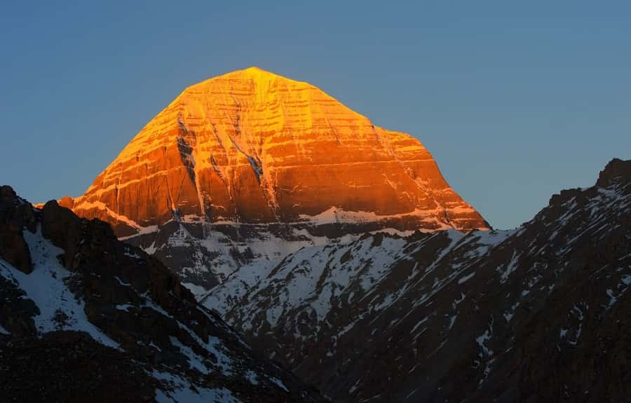

Kailash Mansarovar
The sacred journey to Mount Kailash and Lake Mansarovar is regarded as one of the most spiritually powerful pilgrimages in the world. Revered as the divine abode of Lord Shiva and Goddess Parvati, Mount Kailash is not just a mountain—it is a cosmic center of faith, devotion, and divine energy. Rising majestically to a height of 6,638 meters, it remains unclimbed out of deep religious respect.
Just a few kilometers away lies the serene Lake Mansarovar, believed to have been created by Lord Brahma himself. The crystal-clear waters of the lake reflect the snow-covered peak of Kailash, creating a divine and mesmerizing view. For centuries, saints, sages, and pilgrims have undertaken this sacred yatra to seek spiritual purification, liberation (moksha), and inner peace. With Yatra Kailash, this once-in-a-lifetime journey becomes accessible, well-organized, and spiritually fulfilling.

What To Know About Kailash Mansarovar
Located in the remote and mystical region of the Tibetan Plateau, Kailash Mansarovar lies at an altitude of over 4,500 meters above sea level. The region is known for its harsh climate, thin air, and breathtaking landscapes. Mount Kailash holds immense significance not only in Hinduism but also in Buddhism, Jainism, and the ancient Bon religion. For Hindus, Mount Kailash is the eternal home of Lord Shiva. Buddhists consider it the abode of Demchok (Chakrasamvara), representing supreme bliss. Jains believe it to be the place where their first Tirthankara attained liberation, while Bon followers regard it as the center of spiritual power.
Lake Mansarovar is one of the highest freshwater lakes in the world and is considered a symbol of purity. Pilgrims believe that taking a holy dip in its waters washes away sins accumulated over lifetimes and brings spiritual awakening. The lake’s calm and reflective surface enhances the mystical aura of the entire region.
The Pilgrimage to Kailash Mansarovar
The Kailash Mansarovar Yatra is not just a journey—it is a test of faith, endurance, and devotion. One of the most important aspects of this pilgrimage is the sacred “Kora” or parikrama of Mount Kailash, which spans approximately 52 kilometers. This trek usually takes three days and passes through rugged terrain, high mountain passes, and breathtaking valleys. The most challenging part of the parikrama is crossing the Dolma La Pass, situated at an altitude of around 5,630 meters. This point is considered spiritually significant, symbolizing the transition between life and death, and many pilgrims leave behind offerings as a mark of letting go of past sins.
Pilgrims also perform rituals at Lake Mansarovar, including bathing in its holy waters, performing pujas, meditation, and offering prayers. With Yatra Kailash, every step of this sacred journey is carefully planned, ensuring that pilgrims can focus on devotion while all logistics are taken care of.
The Surroundings of Kailash Mansarovar
The surroundings of Kailash Mansarovar are a perfect blend of natural grandeur and divine tranquility. Towering snow-covered mountains, vast open plains, and pristine lakes create a surreal environment that feels untouched by time. Nearby lies Rakshastal, a contrasting lake known for its darker waters and associated mythological significance. The entire region radiates silence and peace, broken only by the sound of winds and flowing streams. The clear skies, especially at night, reveal a breathtaking view of countless stars, adding to the mystical experience. The untouched beauty of the Tibetan Plateau enhances the spiritual journey, making every moment feel sacred and deeply personal.
The Spiritual Experience of Kailash Mansarovar
Undertaking the Kailash Mansarovar Yatra is often described as a life-changing experience. The divine energy surrounding Mount Kailash is believed to awaken inner consciousness and bring a deep sense of clarity and peace. Pilgrims often report feeling a powerful spiritual presence, especially during meditation or while performing the parikrama. The act of walking around the sacred mountain is seen as a path to liberation, helping devotees shed ego, negativity, and past karmas. The serene waters of Lake Mansarovar further enhance this experience, offering a space for reflection, prayer, and inner transformation. With Yatra Kailash, pilgrims are guided to fully immerse themselves in this spiritual journey.
The Challenges of Visiting Kailash Mansarovar
- High altitude is the biggest challenge, as Mount Kailash is located above 6,000 meters, leading to low oxygen levels and risk of altitude sickness.
- Extreme and unpredictable weather conditions, including sudden snowfall, strong winds, and freezing temperatures.
- Physically demanding trek during the parikrama (Kora), especially while crossing high passes like Dolma La.
- Limited medical facilities and basic infrastructure in remote areas of the Tibetan Plateau.
- Long travel durations with rough road conditions and challenging terrain.
- Need for proper permits and documentation due to restricted access in Tibet Autonomous Region.
- Mental endurance is required, as the journey tests patience, stamina, and determination.
- Communication challenges due to limited network connectivity in the region.
Best Time to Visit
- The ideal time to visit Lake Mansarovar and Mount Kailash is between May and September.
- May to June: Pleasant weather and clear views, making it a great time for the yatra.
- July to August: Slight chances of rain but spiritually significant period with higher pilgrim turnout.
- September: Less crowded, stable weather, and excellent visibility of the mountain.
- Avoid winter months (October to April) due to extreme cold and heavy snowfall, which make routes inaccessible.
Travel Tips For Kailash Mansarovar Yatra
Prepare Your Body in Advance:
Start physical preparation at least 4–6 weeks before the journey. Include walking (5–8 km daily), light jogging, yoga, and breathing exercises like pranayama. Since the yatra involves trekking at high altitudes around Mount Kailash, good stamina is essential.
Understand Altitude and Acclimatization:
The journey takes place on the Tibetan Plateau, where oxygen levels are low. Give your body time to adjust by following acclimatization schedules strictly. Avoid rushing, and inform your guide immediately if you feel symptoms like headache, dizziness, or nausea.
Medical Check-up is a Must:
Consult your doctor before the trip, especially if you have heart, lung, or blood pressure issues. Carry essential medicines, including those for altitude sickness, cold, fever, and digestion.
Pack Smart and Layered Clothing:
Weather can change rapidly, so pack thermal wear, heavy jackets, gloves, woolen caps, and waterproof clothing. Good quality trekking shoes with a strong grip are a must for the rocky paths around Lake Mansarovar.
Stay Hydrated and Eat Light:
Drink plenty of water to avoid dehydration at high altitudes. Eat light, nutritious meals and avoid oily or heavy food. Carry dry fruits, energy bars, and instant snacks for quick energy during the trek.
Mental Preparation is Equally Important:
The yatra is not just physically demanding but mentally challenging too. Stay positive, patient, and focused. Spiritual journeys like this require inner strength and determination.
Respect Local Culture and Environment:
The region is sacred and environmentally sensitive. Avoid littering, respect local customs, and maintain the sanctity of holy places like Lake Mansarovar.
Keep Documents and Permits Ready:
Carry all required documents, including passport, visa, and permits for entering Tibet Autonomous Region. Keep both physical and digital copies.
Choose a Trusted Travel Partner:
Traveling with an experienced organizer like Yatra Kailash ensures proper planning, safety, medical support, and guidance throughout the journey, allowing you to focus fully on your spiritual experience.

Book Your Kailash Mansarovar Yatra Today
Go on a divine and spiritually enriching journey to Kailash Mansarovar with Yatra Kailash. This yatra begins from Delhi and takes you through the breathtaking Himalayan landscapes, where you can feel a deep connection with nature and the divine. Mount Kailash, the sacred abode of Lord Shiva, is one of the most revered pilgrimage sites, and Mansarovar Lake is believed to cleanse the soul with its holy waters. During this journey, you will experience serene surroundings, high-altitude beauty, and profound spiritual energy. Book your Kailash Mansarovar Yatra today with Yatra Kailash and enjoy a smooth, soulful, and unforgettable pilgrimage experience.